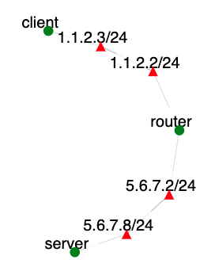

Overview
Lab exercise incorporating IPv6.
Assignment Instructions
Setup
- If you don't have an account, follow the instructions here.
-
Create an instance of this exercise by following the instructions here, using
ipv6as Lab name. Your topology will look like below:
. - After setting up the lab, access your nodes.
Tasks
Your task is to enable IPv6 addresses between the nodes in your experiment.
-
Run:
ifconfigon each node, discover and note the interface for each IPv4 address shown in the topology diagram above. Also note the IPv6 address assigned to each interface that you just discovered.
-
Ping the router from client and server using the link-local addresses and using the interfaces on client and server node that face the router.
ping6 -I ethx -c 1 fe80::/64 (use the addresses from your experiment) -
Verify that IPv6 kernel is running on the router, client and server nodes.
test -f /proc/net/if_inet6 && echo "Running kernel is IPv6 ready" -
Install netplan on router, client and server (use sudo):
apt update -y apt install netplan.io network-manager -yEdit /etc/netplan/config.yaml file on router, client and server nodes to include script for each interface.
Note: remember the router has two interfaces; replace ethx and ethy below with the correct ethernet interfaces from your experiment!
Router node:
# This file describes the network interfaces available on your system # For more information, see netplan(5). network: version: 2 renderer: NetworkManager ethernets: ethx: dhcp4: false dhcp6: false addresses: - 5.6.7.2/24 - 2001:0db8:0100:f101::250/64 ethy: dhcp4: false dhcp6: false addresses: - 1.1.2.2/24 - 2001:0db8:0100:f102::250/64Client node:
# This file describes the network interfaces available on your system # For more information, see netplan(5). network: version: 2 renderer: NetworkManager ethernets: ethx: dhcp4: false dhcp6: false gateway6: 2001:0db8:100:f102::2 addresses: - 1.1.2.3/24 - 2001:0db8:0100:f102::2/64Server node:
# This file describes the network interfaces available on your system # For more information, see netplan(5). network: version: 2 renderer: NetworkManager ethernets: ethx: dhcp4: false dhcp6: false gateway6: 2001:0db8:100:f101::1 addresses: - 5.6.7.8/24 - 2001:0db8:0100:f101::1/64After installing netplan and editing yaml file, apply all settings on router, client and server nodes.
netplan apply -
Run
ifconfigon router, client and server to see the IPv6 addresses added. Run ip command from router to see the link-local addresses of client and server.ip -6 neigh show/sbin/ip -6 route show dev ethx -
Configure your
routernode as a IPv6 router. Enable forwarding by typing:sysctl -w net.ipv6.conf.all.forwarding=1 -
Try pinging client from server, using the client's IPv6 address.
Submission Instructions
Submit the following, all in one tar-gzipped file
- Annotated topology with IPv4 and IPv6 addresses and interface names (e.g., eth1)
- Your netplan configuration files
-
Output of the following command, ran at
clientnode:traceroute -6 2001:db8:100:f101::1